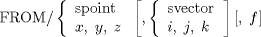

| Chapter 4. Point-To-Point Programming | ||
|---|---|---|
 |  | |
| Chapter 4. Point-To-Point Programming | ||
|---|---|---|
| | | |
Table of Contents
The APT language provides the capability for explicitly referencing an absolute location to which the cutter is to be positioned. This concept of moving a cutter from one specific location directly to another specific location by means of a single straight line movement is called point-to-point programming. The movement is accomplished with the APT statements FROM, GOTO, and GODLTA. These statements completely control the motion of the cutter and require no additional information.
The FROM statement specifies a location at which the tip of the cutter is assumed to be positioned. A FROM statement should be given before any other statement used to define a cutter position; in this regard it will not result in any movement of the cutter. However, later FROM statements in the part program will usually result in a movement of the tool. The general format of the FROM statement is as follows:
FROM/ x, y (See Section 4.4)
The FROM point is specified either symbolically or by listing the x, y and z coordinates. The first optional field is used to specify information concerning the axis of the cutter (either by referencing a symbolic vector or by giving the individual components). The last optional field is used to specify a feed rate that is to be in effect until a new value is specified on a later statement.
![[Note]](images/note.png) | Note |
|---|---|
If the alternate form is used (FROM/ x, y), the optional fields cannot be used. |
| | | |
| 3.23. Additional Geometric Words |  | 4.2. The Absolute Movement (GOTO) Statement |